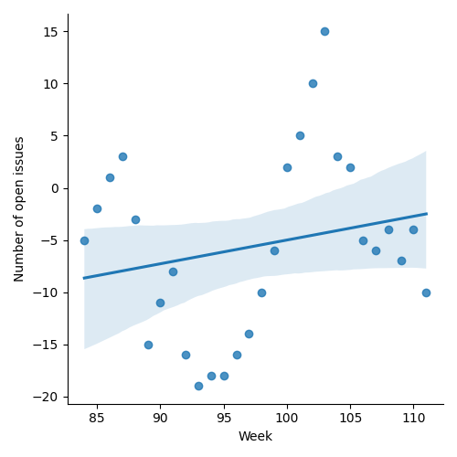
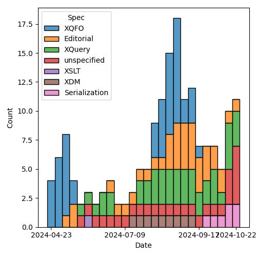
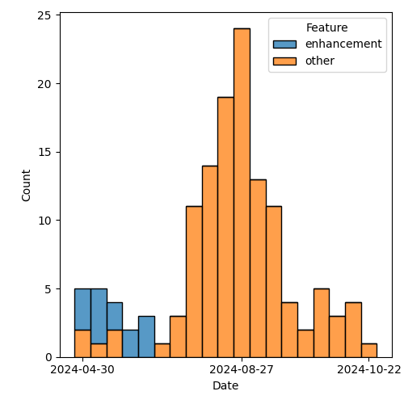

QT4 CG Meeting 096 Minutes 2024-10-29
Meeting index / QT4CG.org / Dashboard / GH Issues / GH Pull Requests
Table of Contents
- Draft Minutes
- Summary of new and continuing actions
[0/8] - 1. Administrivia
- 2. Technical agenda
- 2.1. PR #1504: 868 fn:intersperse → fn:join, array:join($arrays, $separator)
- 2.2. PR #1501: 1318 Function Coercion: Records, Maps, Arrays
- 2.3. PR #1498: 1366 Use ++ and ** operators in EBNF
- 2.4. PR #1497: 1471 JSON Serialization: json-lines
- 2.5. PR #1496: 1495 Drop context value static type
- 2.6. PR #1532: 1519 Add -or-self axes
- 2.7. PR #1530: 1500 New XSLT character-map() function
- 2.8. PR #1523: 148 New functions to get type information
- 3. Any other business
- 4. Adjourned
Draft Minutes
Summary of new and continuing actions [0/8]
[ ]QT4CG-080-07: NW to update the build instructions in the README[ ]QT4CG-082-02: DN to work with MK to come to agreement on the fn:ranks proposal[ ]QT4CG-088-01: NW to consider how best to add a dedication to MSM.[ ]QT4CG-088-04: [Someone] needs to update the processing model diagram needs vis-a-vis the static typing feature[ ]QT4CG-089-01: CG to draft a PR that attempts to resolve the operators described in #755 to a smaller number of orthogonal choices.[ ]QT4CG-096-01: MK to add a note to the Terminology section about ++ and **[ ]QT4CG-096-02: NW to create an issue about the indentation parameters.
1. Administrivia
1.1. Roll call [9/12]
DB, EP give regrets.
[ ]David J Birnbaum (DB)[X]Reece Dunn (RD)[ ]Sasha Firsov (SF)[X]Christian Grün (CG)[X]Joel Kalvesmaki (JK)[X]Michael Kay (MK)[X]Juri Leino (JLO)[X]John Lumley (JWL)[X]Dimitre Novatchev (DN)[X]Wendell Piez (WP)[ ]Ed Porter (EP)[X]Norm Tovey-Walsh (NW). Scribe. Chair.
1.2. Accept the agenda
Proposal: Accept the agenda.
Accepted.
1.2.1. Status so far…
These charts have been adjusted so they reflect the preceding six months of work.

Figure 1: “Burn down” chart on open issues

Figure 2: Open issues by specification

Figure 3: Open issues by type
1.3. Approve minutes of the previous meeting
Proposal: Accept the minutes of the previous meeting.
Accepted.
1.4. Next meeting
This next meeting is planned for 5 November. Any regrets?
1.5. Review of open action items [3/8]
(Items marked [X] are believed to have been closed via email before this agenda was posted.)
[ ]QT4CG-080-07: NW to update the build instructions in the README[ ]QT4CG-082-02: DN to work with MK to come to agreement on the fn:ranks proposal[ ]QT4CG-088-01: NW to consider how best to add a dedication to MSM.[ ]QT4CG-088-04: [Someone] needs to update the processing model diagram needs vis-a-vis the static typing feature[ ]QT4CG-089-01: CG to draft a PR that attempts to resolve the operators described in #755 to a smaller number of orthogonal choices.[X]QT4CG-095-01: MK to mark the UnreservedNCName toke as XQuery only.[X]QT4CG-095-02: MK to add usage advice about computed constructors[X]QT4CG-095-03: CG to consider what to do about coercion causing keys to become duplicates in #1501.
1.6. Review of open pull requests and issues
1.6.1. Blocked
The following PRs are open but have merge conflicts or comments which suggest they aren’t ready for action.
- PR #1470: 689 fn:stack-trace: replace with $err:stack-trace
- PR #1505: 1503 Add err:map, err:stack-trace, err:additional to XSLT
- PR #1454: 1449 Relax rules on multiple xsl:includes
- PR #1296: 982 Rewrite of scan-left and scan-right
- PR #1283: 77b Update expressions
- PR #1062: 150bis revised proposal for fn:ranks
- PR #529: 528 fn:elements-to-maps
1.6.2. Merge without discussion
The following PRs are editorial, small, or otherwise appeared to be uncontroversial when the agenda was prepared. The chairs propose that these can be merged without discussion. If you think discussion is necessary, please say so.
- PR #1531: 1499 Deduplicate text relating to unused serialization parameters
- PR #1529: 1525 Add notes on enumeration types
JLO wants to discuss 1533:
- PR #1533: Actions QT4CG-095-01 and -02 - follow-up on computed node constructors
- JLO: I thought we were going to encourage users to use "div" as best practice. But in the PR it still has curly braces.
- MK reviews the note added in the PR
- MK: The
{"div"}andQ{}divforms will work in both 3.1 and 4.0- The
"div"shortcut only works in 4.0.
- The
Proposal: Merge these PRs without discussion.
Accepted.
- JWL: Does that mean exploring which NCNames can be in front of a brace is finished?
- MK: No, there’s still an ongoing effort to reduce the number of names.
2. Technical agenda
2.1. PR #1504: 868 fn:intersperse → fn:join, array:join($arrays, $separator)
See PR #1504.
- CG: I reverted
string-jointo only accept a single separator item.- … I changed to
sequence-joinas the new name (instead of justjoin).- Made the separator required because the function is unnecessary without a separator.
- … Fixed the separator on
array:join; slightly tweaked the formal specification.- Made the examples clearer.
- … I changed to
Proposal: Accept this PR.
Accepted.
2.2. PR #1501: 1318 Function Coercion: Records, Maps, Arrays
See PR #1501.
- CG: The change was pretty minor; for the coercion of maps there was no
description of what to do about duplicates.
- … I added a rule that makes it raise an error.
- … Added an example to show this behavior.
Proposal: Accept this PR.
Accepted.
2.3. PR #1498: 1366 Use ++ and ** operators in EBNF
See PR #1498.
MK introduces the PR with a few examples.
- MK: I share with Steven Pemberton a love of Algol68 which first introduced
this notation.
- … The only question mark is where we explain it in the EBNF. We explain it at the end.
- NW: I think a pointer from the first presentation of productions to this explanation is enough.
- JWL: In comments, it can be useful to have the separator not be a constant string.
- … In
(CommentContents | Comment)*, you need longest match. - … But if you used
++instead, or even**it means you can have comments adjacent but only single comment contents children.
- … In
- MK: There are two reasons why I used it only for simple separators.
- … I felt in that context the notation is more likely to be self-explanatory
- … It simplifies the introduction of it to the XML grammar.
- JWL: All I’m saying is, it is something that can be helpful in reducing the amount of potential ambiguity.
- DN: I don’t think this is very intuitive; it would be better if it was
surrounded by parenthesis.
- … I found the definition a bit ambiguous; it’s not clear that it should be separated by a single occurence of the separator.
- … What about the case of
**? It’s not clear.
- MK: The notation is explained in terms of other grammar productions.
- RD: I think a note in the terminology section makes sense.
- MK: That’s probably a good idea.
- RD: In my XQuery plugin, I implemented comments as a single token and deal with the nesting inside that pass, rather than treating it as separate symbols.
ACTION: MK to add a note to the Terminology section about ++ and **
Proposal: accept this PR.
Accepted.
- MK: I think this might cause merge conflicts; do this one last.
- NW: Good idea.
- JLO: I have used the grammar previously to generate a parser. This syntax isn’t as easy to use for that.
Some discussion of how easy or hard this to do. Consensus seems to be that it already requires preprocessing.
- WP: I think that covers my question as well. I think this is a good change.
2.4. PR #1497: 1471 JSON Serialization: json-lines
See PR #1497.
- CG: This is the result of last week’s discussion. I decided that a
json-linesparameter was easier to describe than adding a new method.- … The parameter defines when and how lines are produced.
- … There’s one specific change for indentation, which says it may not include
newlines if
json-linesis enabled.
- MK: Newlines within strings have to be escaped as
\nalready, right? - CG: Yes. That’s right.
- JLO: I would have thought that suppress indentation is implicit when you select
json-lines - CG: The result can be more readable if it’s indented.
- MK: I was provoked by this PR to write another one that rationalizes the description of parameters.
Some discussion of indentation and json-lines. Consensus is that we can move
forward and raise separate issues if a problem arises.
- DN: Indentation would obviously be necessary only if a human is reading the
result, which probably isn’t a common case with
json-lines. But I’ve noticed that this sort of “prettification” tends to interfere with testing. By default, there should be no indentation. - MK: I think the serialization specification doesn’t define defaults.
- DN: But that’s a complete mess!
- MK: It’s not implementation defined, it’s defined by the host language.
ACTION: NW to create an issue about the indentation parameters.
Proposal: accept this PR.
Accepted.
2.5. PR #1496: 1495 Drop context value static type
See PR #1496.
- MK: We had a number of items in the static context that existed for the static
typing feature. Most of those are gone, but this one remained.
- … This PR removes it.
- … There are a few more editorial changes with references and such.
Proposal: accept this PR.
Accepted.
2.6. PR #1532: 1519 Add -or-self axes
See PR #1532.
- MK: I’ve been aware of this for 20 years and finally decided to do something
about it. It’s frustrating that you can’t write following-sibling-or-self!
- … The PR adds the four axes.
- … Our description of axes is pretty informal.
- JLO: Why isn’t it following-and-self?
- MK: I’m following precedent on naming; that’s not what I would have chosen.
- … It’s most likely because “or” implies a union.
- DN: I think this change is very good. I saw that there’s also sibling, but it was stricken out. A sibling axes would be very handy.
- MK: Yes, I agree. I’ve seen that need. It’s a little bit more complex because it would break the rule that all the axes start at the context and move forward or backwards.
- DN: This would make the language easier to use.
- JWL: I think the sibling axis would be nice to avoid going up to the parent and back down again.
Proposal: accept this PR.
Accepted.
2.7. PR #1530: 1500 New XSLT character-map() function
See PR #1530.
- MK: You can define character maps in your stylesheet, but you have no way to
access them programmatically or supply them to the serialization function.
- … This is a new XSLT-only function,
fn:character-map() - … It adds character maps to the static context so that the function can reference it.
- … This is a new XSLT-only function,
MK describes the function.
- JK: Since I was the catalyst for this PR; one of my use cases was a coupling mechanism between character maps and other things. I needed to create two maps to do that and that won’t be necessary anymore.
- DN: Is this really a character map? Are the values for the keys single characters?
- MK: The keys are always single characters.
Proposal: accept this PR.
Accepted.
2.8. PR #1523: 148 New functions to get type information
See PR #1523.
- MK: This one may require more than one look.
- … The
node-kindfunction gives you the node kind as an enumeration type. - … There’s a new section, Functions on types, that deliver information about schema types.
- … All of this is derived pretty directly from the schema component model in XSD, except that I’ve merged the components for simple and complex typs into one.
- … The
MK walks through the description of the functions on types and the schema-type-record.
- JWL: Ten years ago, this would have been really handy in the streamability analyzer.
- … Is there an argument for getting the ancestor hierarchy for a type?
- MK: We’ve got a transitive closure function. You can do the transitive function of the
base-type(). - RD: With the
fn:node-kind, is there a reason not to method the Data Model node kind? - MK: No. That’s what it should do. And I’ll look for more places where that’s true.
- CG: When reading
schema-type(), I thought this required an XML Schema implementation. Would it make more sense to name itfn:type()? - MK: I’m a bit reluctant because I want people to understand that we have two quite distinct notions of types: item types and schema types that overlap in the case of atomic types.
- CG: So to be strict, every implementation has schema types.
- MK: Yes, if you aren’t schema aware the types are limited to xs:anyType, xs:untyped, and the built-in atomic types.
- DN: I welcome all of this, but I think we are missing a function that returns
the
schema-type-recordfor any type of value. I also think the names are misleading. - MK: The key thing there is that there’s a common misunderstanding that an item
has a type. That’s not the case, a map for example, has an infinite number of
types. The same thing is even more true of functions.
- … “Give me the type of a value” misunderstands the type system.
3. Any other business
None heard.